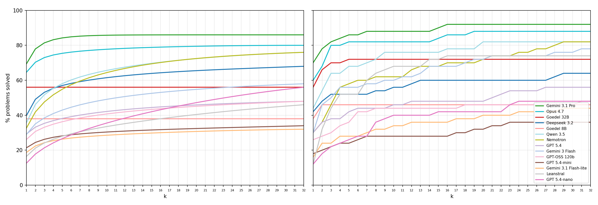
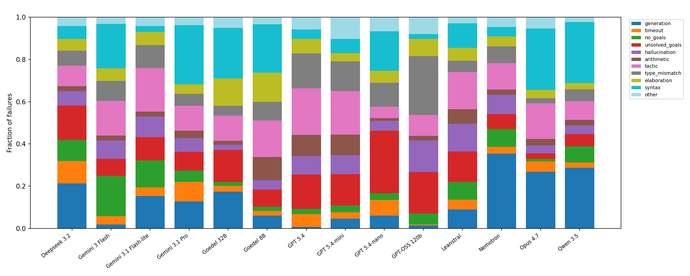

Compares LLMs at generating Lean 4 proofs, evaluated on miniF2F and miniCTX with pass@k and refine@k.
Abstract
Within the past few years, the ability of Large Language Models (LLMs) to generate formal mathematical proofs has improved drastically. We provide a comparison of various LLMs' effectiveness in producing formal proofs in Lean 4 with the goal of assisting those seeking to use LLMs to support their own projects. We utilize both pass@$k$ and refine@$k$ metrics as the benchmark for our comparison and evaluate on subsets of both miniF2F and miniCTX datasets. Our testing shows that overall, Gemini 3.1 Pro and Claude Opus 4.7 perform best. Gemini 3.1 Pro achieved a 92% success rate on miniF2F via refine@32 whereas Opus 4.7 achieved a 86% success rate on miniCTX via refine@32. When taking cost into account, NVIDIA Nemotron 3 Super and GPT-OSS 120B were the most efficient, with competitive accuracies and average costs of $<\$0.01$ per correct proof.
Problem
With many LLMs now capable of generating formal proofs in Lean 4, practitioners lack a systematic comparison to guide model selection for formalization tasks, considering both accuracy and cost.
Approach
The authors benchmark multiple LLMs (frontier models like Gemini 3.1 Pro, Claude Opus 4.7, and specialized models like Goedel-Prover V2 and Leanstral) on subsets of miniF2F and miniCTX datasets using pass@k and refine@k metrics for k up to 32. They analyze error categories, cost-effectiveness, and the impact of iterative refinement with Lean compiler feedback.

(a)
Results
Gemini 3.1 Pro achieved 92% on miniF2F via refine@32, and Claude Opus 4.7 achieved 86% on miniCTX via refine@32. Specialized models performed well on miniF2F but struggled on miniCTX (over 20% worse than frontier models). For cost efficiency, Nemotron 3 Super and GPT-OSS 120B achieved competitive accuracy at less than $0.01 per correct proof. Iterative refinement consistently outperformed independent sampling across all models.

Figure 3.2 : Error category distribution per model . See Appendix A.1 for a description of each error type and specific values. The top 4 categories (in order) are tactical errors (improper use of Lean tactics such as ‘ rw ’, ‘ simp ’, etc.), syntactical errors (incorrect Lean syntax), unsolved goals (incomplete proofs), and generation failures (use of ‘ sorry ’/‘ admit ’, failed API calls). Cumul